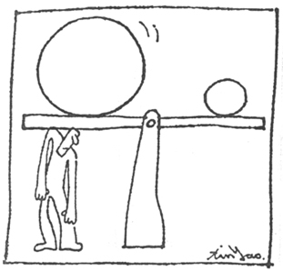
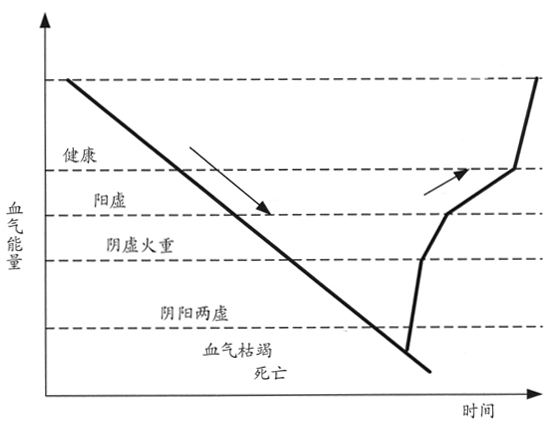
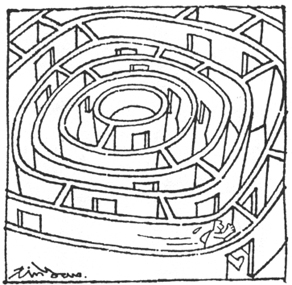
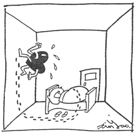
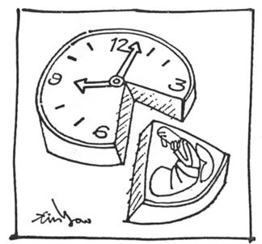
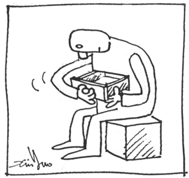
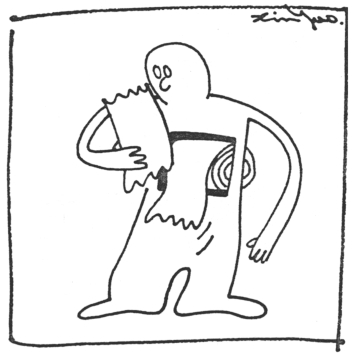

第三章 人体的血气能量系统
在人体的系统方块图中，我们定义了一个能量供应系统，这就像个人计算机中的电源供给器（Power Supply）是计算机的能量供应中心一样。可惜的是目前还没有任何科学的方法可以量测人体的能量，不像用三用电表很简单就可以量测计算机的能量供应状况这么方便。
中医衡量患者血气的情况只能用多方采证的方式，从患者的外表症状，例如头发的粗细和颜色，皮肤的颜色，嘴唇和牙龈的血色，舌头的状况等各种症状，利用学理和经验来评估及判断。这种方式因为缺乏客观的数据，每个中医师的诊断都会有差异。
虽然目前没有仪器可以直接量出人体的血气能量，但是我们利用传统中医古籍所提供的数据，加上我们多年来累积的观察经验，仍然能够对人体的血气能量进行正确的判断，并将之分类，发展出一套模型。我们可以用这个模型来推断疾病发生的原因，再依这些原因拟订治疗的方案。
五个血气水平的疾病和症状
就我对中医的理解，将人体的血气能量依高低水平分为五个等级，由于古时候数字概念不是很普遍，因此用阴、阳和虚、实来表达（前面章节已解释过）。接下来我们用现代的语言说明这些区分的等级。读者可以自己尝试将自己的情况分类，了解自己处在什么样等级的血气能量水平。
健康水平
用中医的眼光来说，这样的人各方面都很平衡，不偏阴也不偏阳，不偏虚也不偏实，平衡是中医追求的目标。因此这是最健康的等级，这个等级的特征是身材匀称，脸色红润，脾气温和，作息规律。由于人体有很强的防御力量，各种外来的疾病不容易侵入，不容易生病。一般很少见到这样的人，也许练太极或气功有成的高人才有这样的身体。
阳虚水平
血气低于健康水平，造成血气下降的原因很多，如睡眠太晚，或长期营养吸收不良等。这时人体抵抗疾病的能力和疾病侵入的能力很接近，在伯仲之间。因此有外来的疾病侵入时，人体仍有能力抵抗，但是不像健康水平的人一样可以很快地击退疾病，会在人体的各个器官发生激烈的战事，因此会出现各式各样的症状。有些人由于身体经常有这种战事的现象，传统上会认为他体弱多病。一般经常感冒甚至发烧的人，或者有过敏性体质的人，都是处在这个等级里的血气水平。

欲望是健康的最大负担。
阴虚水平
血气下降的趋势长期不能扭转，血气降至低于阳虚的下限后，由于人体的能量太低，诊断维修系统无法完全正常工作，疾病入侵或器官的损伤如没有立即的危险，就暂时将之搁置。这时的血气只够维持日常工作或活动的需要。一般的疾病侵入时，人体并不抵抗，疾病长驱直入。由于没有抵抗的战事，因此也没有任何不舒服的疾病症状，但是会在人体的肤色、体形及五官上留下痕迹，有经验的医生能够识别出来。
这样的人是目前工商社会的最大一群。许多人都觉得自己非常健康，有无穷的体力，每天忙到三更半夜，尽情地透支体力也不会生病，这些现象就是典型阴虚水平血气能力的症状。
这种血气水平的人，愈晚精神愈好，这是由于人体日常产生的“血气”无法支应每天的透支，只好从人体原来储存的“火”中提取。比较通俗的说法，这一级的人并不是没有病，而是没有能力生病。
农村长大的人，比城市长大的人，可以经得起更长时间的透支。
每个人可以在这个血气水平维持的时间长短是不同的，一方面要取决于幼年或年轻时的生活作息是不是正常，是不是储存了足够的能量；另一方面也取决于他平时是不是会抽空休息，补充能量。
农村长大的人，比城市长大的人，可以经得起更长时间的透支，这是由于农村长大的人，在幼年时的睡眠较早，身体储存了较多的能量。现代的孩子，比上一代都晚睡，将来可以透支的能量必定较少，生大病的机会一定比较多也比较早。
阴阳两虚水平
由阴虚的状况继续消耗能量，等到储存的能量即将用尽的时候，也就是“火”快用完了，就到了“阴阳两虚”的水平。这时人体会经常处于疲倦的状态。这个时候人体为了取得必要的能量，会到肌肉里或其它部位，淬取能量。
这时的“能量用尽”，指的是在安全库存的范围内的低水平，不是真的完全用尽。人体的能量透支到了这个水平，会暂时停止能量的透支，使身体出现很容易疲倦的状态，强迫人体增加休息，这是一种人体的自我保护措施。
血气枯竭水平
由阴阳两虚的血气水平再继续下降，最终降低到中医所说的“阴阳大虚”的水平，用比较白话的说法，就是“血气枯竭”。这时人体血气虚亏导致肝火旺，夜间难以入睡，越晚精神越好。这个阶段的肝火旺，所透支的能量是超过了人体安全库存下限的透支，身体已经到了山穷水尽的阶段，才会不得不透支各种可能转化的能量。这时越不睡觉，人更虚，肝火越旺，形成恶性循环。由于胆经阻塞引起胆汁不分泌，所吃食物无法转化为造血材料，营养难以吸收。
这个阶段的患者，由于连控制五脏六腑的能力都丧失，发生的都是非常严重的疾病，而且多数是目前医疗系统无能为力的。例如各种癌症、肾衰竭、中风等。由于血气枯竭，同时对五脏六腑都到了失控的地步，因此很容易演变成各个脏器在很短的期间里陆续发病的并发症现象，其实并不是第一个发病的器官拖累了其它的器官，而是各个器官同时都达到了发病的临界状态，一发不可收拾。
多数慢性病，是我们错用了身体的结果。我们需要的，不是灵丹妙药，而是一本正确的人体使用手册。

血气能量示意图
多数内脏的疾病也就是慢性病，只是不同程度低血气水平的症状。
附图是五个血气水平的下降和上升示意图，人体的血气下降，速度很慢，数以十年计。但是上升却很快，数以月计。在血气上升至阳虚之前，如果能每天早睡早起，加上勤敲胆经，血气将很快上升，通常一个月的调养，自身就会有体力和精神明显改善的感觉。四五个月，就有很好的效果，旁人从气色就能看出明显的差异。
多数人就算血气很低，在一年之内都能到达阳虚水平。当血气到了阴虚水平时，由于身体开始处理部分较严重的潜在疾病，因此上升的速度大为降低。到了阳虚水平，则开始处理更多的疾病，血气上升的速度更慢。每个人的上升速度，视每个人的疾病种类、轻重程度和生活作息的改善状况，需要不同的康复时间。
处于任何一个血气水平的人，只要能将血气从下降的趋势转变为上升的趋势，假以时日，血气的水平会不断上升。多数内脏的疾病也就是慢性病，只是不同程度低血气水平的症状。因此，只要提升了血气水平，各种慢性病都有康复的机会。
人体血气升降趋势的症状和疾病
在血气上升和下降时都会出现生病的症状，即使是相同的症状，在上升和下降趋势中，却分别由完全不同的原因所造成，当然也必须采取不同的治疗方案。

那么多的名医和秘方，需要足够的智慧，才找得到生门。
阳虚的患者生病时（有不舒服的症状），存在两种可能的情形，一是在血气下降的过程，二是血气上升的过程。
在血气下降过程中，从健康进入阳虚，这时身体的能量不足以将疾病快速击败，因此经常生病。这样的情形痊愈有两种可能，一种是努力改善生活规律，增加身体的能量，使自己回到健康水平，让身体有能力随时快速地击败疾病，这是真正的痊愈。
另外一种可能是继续过着不规律的生活，消耗血气能量，使血气下降到阴虚水平，由于身体的诊断维修系统不再全面工作，一些小毛病就不再处理，也就没有症状，虽然实际上身体更差了，但是患者会以为已经痊愈，这是假的痊愈。
在血气上升过程中，患者从原来不会生病的阴虚水平，进入很容易生病的阳虚水平。表面上看从原来不生病，到很容易生病，多数人都认为身体变差了，实际上却是血气上升，身体变好的结果。
许多人都有这样的经验，平常很忙没有时间生病。一休假，在家睡两天，就开始生病，这就是从阴虚进入阳虚的现象。开始上班以后，忙两天，血气又下降到阴虚水平，身体也就不再生病了。建议这样的朋友，等工作较轻松时开始有计划的调养，找一段时间休个长假，让身体有机会把该处理的问题清理干净。
运动会打通经络，强化心脏的功能，提高清除体内垃圾的能力，但是并不会增加人体的血气能量。
如果无论如何都找不出时间，又真的想把身体弄好，那么就狠下心，把工作辞了，在家里休息个半年。把身体里长期被搁置的疾病去除，也就是把血气调到阳虚水平，好好的生几场病。有时候调养的时间会长达好几年，多数患者都嫌时间太长。其实想想，我们几十年用下来的身体，用使用时间的十分之一调养回来，应该是很合理的。
运动不会增加能量
运动会打通经络，强化心脏的功能，提高清除体内垃圾的能力，但是并不会增加人体的血气能量。
运动对健康的影响，主要是加快血液循环的速度，可以使一些闭塞的经络因而畅通，特别是对于心包经的打通有很好的效果。心包经的通畅，可以强化心脏的能力，提升人体的免疫功能，也会加快人体的新陈代谢，加快人体废物的排除。
人体的发胖，多数是由于心包经的不通畅，导致垃圾（脂肪）的堆积，运动之所以具有减肥的效果，是由于运动有助于打通这条经络。运动需要消耗人体的能量，大量的体力消耗会使人产生疲倦感，进而增加睡眠的时间，改善睡眠的品质，增加了人体造血的时间，血气水平因而提高。也就是说能量提升不在运动而在运动之后的睡眠，血气不足的人，如果只是单纯的运动，完全不改善生活习惯，增加或调整睡眠的时间，则运动只是无谓的消耗血气能量而已。

肝热的人，梦多，睡不沉。
现代许多繁忙的人都利用夜间进行运动，人体经过了一整天的体力消耗，到了晚上必定已经没有多余的能量可供运动。因此运动时身体必定是调动储存的肝火，加上运动的激发，精神处于亢奋状态，在夜间九十点停止运动之后，至少需要两三个小时让这种亢奋状态消除，才可能入睡。由于肝火仍旺，这一夜的睡眠必定不安稳。这种运动对身体不但没有任何益处，如果形成长期的习惯，反而会成为健康的最大杀手。多数人都以为运动可以创造能量，所以才能在运动之后精神特别好，殊不知完全是透支肝火的结果。
有一次一个哮喘患者来找我们的医生，医生看过之后，只给他口头的建议，不教他推拿的方法。我感到很奇怪，医生事后告诉我，这个患者哮喘已经很多年，最近参加早泳会后，哮喘就好了。可是观察他的血气，仍然很低。判断他的情况是原来的血气在阳虚水平，血气并不太低，因此身体经常会进行寒气的排除，因而产生哮喘。近期由于参加早泳，但是并未早睡，吸收也没有改善，因此血气更差，而下降到了较低的阴虚水平，身体不再有足够的能力驱除寒气，从原来的经常哮喘变成了没有能力喘，症状消除，患者以为哮喘已经痊愈了。
无论在哪一个血气水平，只要能够早早地睡觉，再敲打胆经，就能够使血气从下降的趋势逆转为上升趋势。
这种情形如果医生建议他早睡早起加上经络的调理，这些措施必定会使他的血气很快从阴虚回升到阳虚水平，这时他又会开始排除寒气，哮喘再度发作。患者不会认为早睡早起会使他发病，一定认为是我们的经络调理方法有问题，我们将陷入有口难辩的地步。因此，最好的做法只能给予口头建议，建议早睡早起，让他的哮喘自己再度发作，才好进行下一步工作。但是这样的患者，多数会认为他原来用运动就将哮喘治好了，不会相信我们的说法，最终的结果必定是继续用他原来的运动疗法。
从这三个血气模型，加上本书随后所介绍的方法，可以发展出一套养生治病的方法。无论在哪一个血气水平，只要能够早早地睡觉，再敲打胆经，就能够使血气从下降的趋势逆转为上升趋势。
只要血气上升到阳虚水平，身体的免疫系统、诊断维修系统将陆续恢复功能，逐一的清理、治疗人体存在的问题和疾病，身体会先出现许多各式各样的小毛病，随着这些小毛病的一一清理，身体的状况会逐步好转，血气逐渐增加，只要血气长期是朝上走的趋势，健康就只是一个时间问题而已。
血气包含人体的许多物质，其中血液是人体能量最重要的代表。
血气能量的储存
“透支体力”是我们经常使用的词句，体力既然能够透支，那么就必然能够储存。
“血气”是中医用来说明人体能量的名词，但是人体内并没有任何物质称之为“血气”，根据中医的解释，血气包含人体的许多物质，其中血液是人体能量最重要的代表。血液总量和人体的血气能量成正比，人体的能量是透过血液来储存和运送。
只要每天造血的数量大于血液的消耗，那么血液总量就会愈来愈多，多余的血液就会进入人体的各个脏器。例如，肝在中医里是有藏血的功能，而人体很虚弱时，肾脏也会萎缩，所谓的肾脏萎缩，也就是肾脏中的血液量减少了。因此如果人体长期处于血液总量不断上升的状态，那么在各个脏器中都充满了血液，骨头中也充满了骨髓，这就是血气能量储备充足的状态。
反之，如果每天的造血量少于血液的消耗时，血液总量就会愈来愈少，各个脏器中储存的血液也就愈来愈少。当脾脏中的藏血减少时，人体的诊断维修系统的功能就减弱，免疫能力自然下降。当肝脏的藏血减少时，血液在肝脏中清洗的次数就减少了，血液就愈来愈脏。当肝脏中的血液减少到很低时，部分肝脏由于长期得不到血液的滋养，会逐渐出现萎缩或者硬化的现象。肾脏的藏血减少时，血液中的垃圾无法透过肾脏排出去，小便的颜色逐渐变淡，最终呈现完全清澈的状态。随着血液总量的继续减少，最终肾脏完全不再发挥作用，就演变为尿毒症。
血气能量是可以储存的，这是一个很重要的逻辑观念。
我们都有使用手机的经验，手机的电池，充电一次约两三个小时，可以使用两三天，使用时间是充电时间的数十倍。人体血气储存的机能也像手机电池的充电一样，只要掌握了人体造血机能的各项条件，就能使血气能量快速上升。反之，如果长期处于透支状态的人，其幼年时所储存的血气能量，可以支持其数十年的消耗。
血气能量是可以储存的，这是一个很重要的逻辑观念。用这样的逻辑能够说明有些人长期不正常地生活，每天只睡很短的时间，而没有立即的疾病症状，是因为他年轻时储存了较多的能量。但是，随着能量的继续透支，未来一场大病还是免不了的。
人体在利用储存血气能量时，有点像大楼停电时使用的备用能源系统。由于备用能源系统的储存量有限，而且力求能够用最长的时间。因此在使用备用能源系统时，通常只供应最重要的部分。例如大楼中的照明系统和消防系统等，耗电量大的空调系统则停止运行。

腾不出时间睡觉的人，迟早会腾出时间来生病。
同样的，当人体的血气不够，开始起用备用能源系统时，也仅供应必要的人体功能，消耗能量大的人体诊断维修系统就暂时停止能源的供应，当然也停止运行了。
中医将正常的能量称之为“血气”，备用能源称之为“火”。使用备用能源时，身体的主要现象是越晚精神越好，就是中医常说的“心火盛”或“肝火旺”。
由于使用备用能源时，诊断维修系统几乎停止运行，人体没有不舒服的疾病症状。许多人就误认为自己身体很好，从来不生病，可以任意透支体力。也有些人，平常忙起来不生病，一旦停下来休息，立刻浑身不舒服。就是平常都使用备用能源，休息下来，血气能量多了，诊断维修系统开始运行，人体就有不舒服的疾病症状。
有些人明明身体已经很糟了，还是不知道保养，不知道休息，认为工作上没有他不行，每天都要拖到半夜一两点才上床。等拖垮了进了医院，公司最终还是失去了他。
记得有一次在一家公司看到一幅标语“今天不努力工作，明天努力找工作”；套他的语意，也给大家一句忠告：“今天不好好睡觉，明天好好睡长觉”。与其累坏了生病住医院疗养两个月，不如提前在家休息两星期来得好。这是非常简单的道理，偏偏就有很多人想不通。
只要早睡早起，就能有一个健康的人生，真是再简单不过了。
我们经常给患者的建议是：养生之道的根本，就是经常留一分血气能量给自己。“早睡早起身体好”是我们从小就被再三教导的最简单常识，只是一直没有受到大家的重视。大家也不明白晚睡晚起有什么不好？现在有了血气能量的观念，大家应能明白只要早睡早起，就能有一个健康的人生，真是再简单不过了。
如何观察血气的水平和趋势
谈了许多血气的观念和模型，可是如何才能知道自己血气水平的高低呢？
虽然目前仍然没有适当的仪器很方便地测量人体的血气水平，但是我们有几个简便的方法用在一般的诊断中。最简单的是观察嘴唇和牙龈的颜色，这个部分会明显地反映身体内血液的颜色，而且会留下过去一段时间血气状况的痕迹。
长期血气透支后，会使嘴唇的颜色渐渐转暗，严重的成为紫黑色。但是当开始改善睡眠习惯之后，会从下嘴唇的内侧开始改变颜色，逐渐由内而外，当改变至嘴唇厚度的中间部位，可以从外部看到明显的里外颜色差异时，至少需要半年的时间。整个下嘴唇颜色全变成淡红色时，则需一年以上的调养。因此，只要从上下嘴唇的颜色差异，就能判断过去这段时间里，这个人的血气是不是处在上升的趋势，而且也能判断其调养时日的长短。

灵丹妙药就在身体里，却在外面不停的找。
牙龈是另一个非常容易观察血气的部位，特别是一些原来血气很低的人，原来的牙龈颜色多数都很深，当开始依照本书的方法调整生活习惯之后，约两周到一个月就会在牙龈靠近牙齿的部分出现一条很细的新肉痕迹，这部分的颜色接近粉红色，和原来的深色形成强烈的对比。随着调养时间的不断加长，淡红色的部分逐渐增加，两色中间形成一条很清楚的界线，只要观察这条线的位置，就能知道这个人在过去一段时间的生活习惯或工作压力的变化。牙龈的颜色如果很淡，表示这个人睡眠的时间够长，但时辰不对或吸收不良，血气仍然不足。正常的血色应该带点血红色。
在血气增加的过程中，牙龈上的牙肉会愈长愈厚，露在外面的牙齿愈来愈短，牙肉会逐渐长到牙齿的缝隙中，这也是观察血气趋势的很好方法。相反的，如果血气不断下降，则牙龈上的牙肉会愈来愈低，也就是牙肉逐渐收缩，牙齿愈来愈长，直到把牙根都露出来，就很容易得牙周病。
所以说牙周病是血气下降的结果，改善牙周病的方法很简单，只要依照本书的方法调养一段时间，让牙肉长厚一点，牙周病就会逐渐改善了。不过提醒牙周病的朋友，在开始调养的初期，应该先找牙医把牙根上的结石去除，否则牙肉开始往上长之后，会将结石包在牙肉中，日后很容易发炎，清除包在牙肉中的结石很麻烦，需要将牙肉用手术割开才能清除。
手掌的颜色和肤质也是观察血气的重要讯息，如果脸色红润，但是掌心也很红，则是肝气上冲造成的红，这种红润不能代表这个人原来的血气，如果泄除了肝气，可能脸上的红润就完全褪光了。标准的手掌颜色应该掌心白、指尖红，这样的手掌表示这个人目前肝气不盛，脸上的红润就是真正的健康色。
刚开始调养时，手上的颜色会不断地变化，每个人变化的方式都不完全一样，必须视其起步时的状况而定。
另外手掌摸起来非常软的人，是血气很低、血中蛋白很少的人，已经有一部分的肌肉被转化为糖用掉了，当开始调养三四个月，血中蛋白质增加后，本来正常的血糖也会跟着升高，如果到医院检查时，就会出现糖尿病的症状，这时不用紧张，只要依照本书中糖尿病章节中的方法，继续调养，两三年内会自然痊愈。
手掌非常厚而且粗的人，血气必定很低，以至于手掌中堆积了许多垃圾，表面上的皮肤也久未换新，显然组织的再生能力也很弱。
健康检查不一定需要完全依赖仪器，仔细地留意就能了解自己真正的健康情形。
手背上的血管也是一个重要讯息，血气很低的人，血液总量必定也不足，血管不明显，到医院打针时，不容易找到血管，有时血管的部位甚至呈凹陷状。有些血脂很高的人，血管的颜色很深，前面提到糖尿病的人，血管看起来较粗，但没有弹性。随着血气的提高，血管会愈来愈饱满，颜色也会愈来愈淡，而且愈来愈有弹性。
从血气变化在人体外表留下的各种痕迹，就能明白健康检查不一定需要完全依赖仪器，仔细地留意就能了解自己真正的健康情形。除了这些迹象之外，在身上还可以找出许多其它的症状，例如白头发的人胆功能必定不好，血气也不会好，皮肤干而且灰的人更是血气极端低落等，都可以观察到血气的水平和变化的趋势，这些就留待专业的医生们去学习了。
许多人都把体质归咎于遗传，例如，多数年轻时就有白头发的人（俗称为少年白）常常会说，这是遗传的，我父亲（或母亲）就是这样。其实白头发的形成和感冒的用药习惯有密切关系，有些人非常注重保养身体，一有感冒迹象就立刻吃药，这样的人身体上的寒气根本无从宣泄，最容易长白头发。而这样的人照顾孩子时，也必定用同样的逻辑，孩子长大了也自然很早就有白头发了。
许多所谓的“遗传”性疾病，很可能是由于一家人具有相同的生活习惯和用药习惯的结果。
